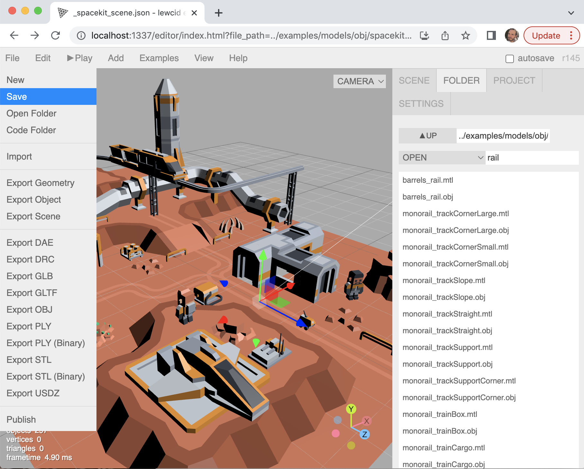
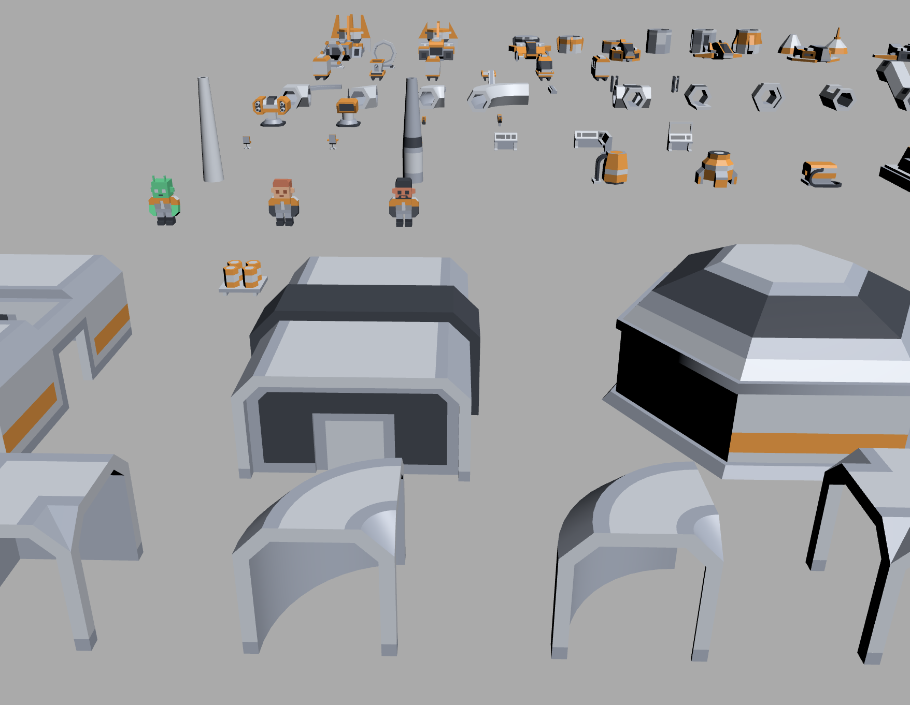
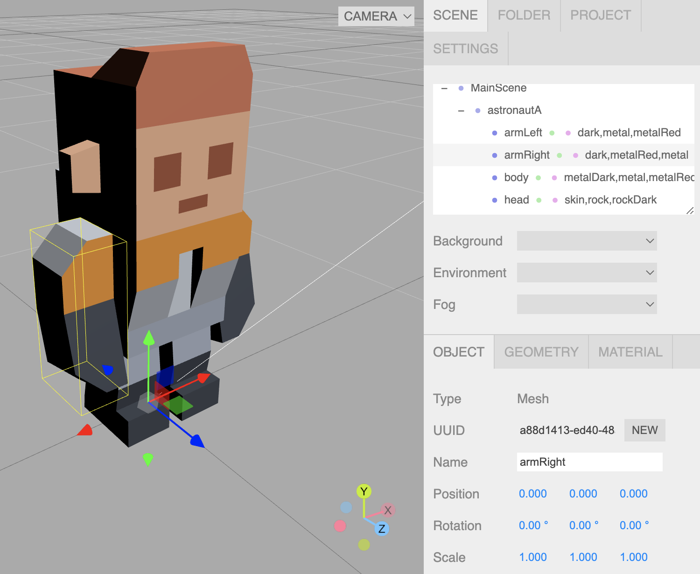
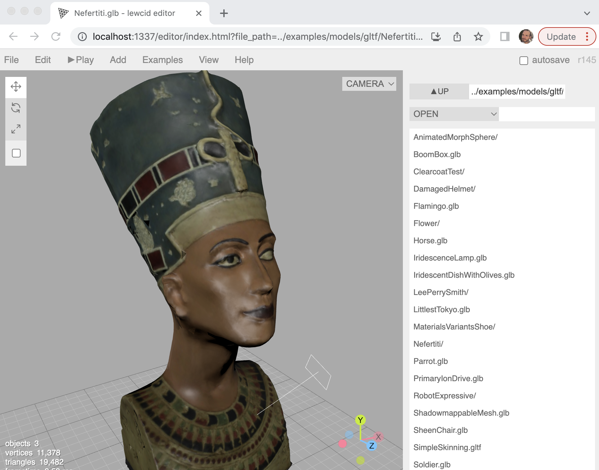

lewcid editor
the
THREE.js
editor adapted to large-project and local-file editing.
source branch
and
demos
by
Lewey Geselowitz
Editor (clean)
HAND-BASED 3D-SCROLLING EXAMPLE

EXAMPLE SCENE
(from
Space Kit
by
Kenny.nl
)
 EXAMPLE KIT
 EXAMPLE OBJ
 EXAMPLE GLTF
EXAMPLE SEURAT CAPTURE
THREE.js Docs
Features
Folder Tab - for browsing/importing model collections
File/Save - for local file editing
Path-based-scenes - for saving scenes that reference other files without embedding them.
WASD Camera - for navigating complex scene
Misc - numerous small fixes to improve the above